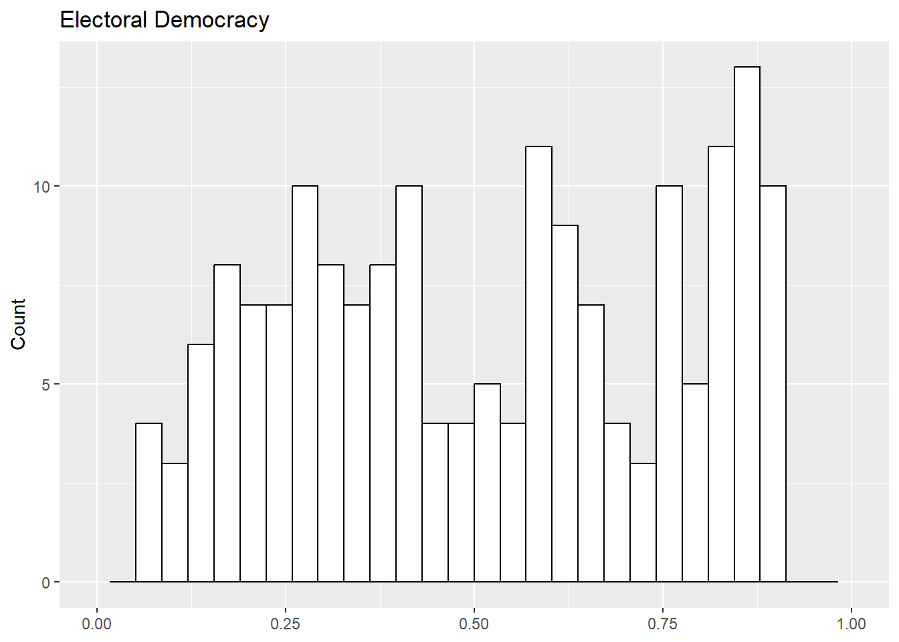

Show the code
# Packages
library(rio)
library(tidyverse)
library(modelsummary)
#Load your data
demdata <- import("data/demdata.rds")- 1
- For importing/exporting data
- 2
- For data manipulation & plotting
- 3
- For creating regression tables
# Packages
library(rio)
library(tidyverse)
library(modelsummary)
#Load your data
demdata <- import("data/demdata.rds")Figures are great ways of presenting statistical information. There are times when we will want to include multiple figures in our papers.
patchworkLet’s say that our paper was focused on investigating the relationship between inequality and democracy scores. Democracy, of course, is a complex concept. We can see this from the name of one of the most important sources of data on regime type available to researchers (emphasis mine): the Varieties of Democracy (V-Dem) project. The V-Dem dataset, for instance, includes v2x_polyarchy which refers to the extent of electoral democracy, v2x_libdem which focuses on the extent of liberal democracy, and v2x_egaldem which focuses on the extent of egalitarian democracy.1 Perhaps we plan on analyzing all three indicators as DVs in our paper. We would naturally want to describe the nature of these variables at some point in our paper, i.e., provide some indication about their central tendency and how much they vary. We could do this rather simply in-text by telling the reader about the mean and standard deviation of each variable. (“My first dependent variable is a measure of electoral democracy from V-Dem. This variable measures blah blah blah (mean = X, SD = X). My second….”) We could also provide a nice figure showing the degree of variation in these variables as well to supplement these discussions with a histogram making a lot of sense given the nature of these variables. For example:
1 To say nothing of v2x_partipdem (participatory democracy) and v2x_delibdem (deliberative democracy)!
# Plot 1
poly_plot <- ggplot(demdata, aes(x = v2x_polyarchy)) +
geom_histogram(color = "black", fill = "white") +
labs(title = "Electoral Democracy",
x = NULL, y = "Count") +
scale_x_continuous(limits = c(0,1))
# Plot 2
lib_plot <- ggplot(demdata, aes(x = v2x_libdem)) +
geom_histogram(color = "black", fill = "white") +
labs(title = "Liberal Democracy",
x = NULL, y = "Count") +
scale_x_continuous(limits = c(0,1))
# Plot 3
egal_plot <- ggplot(demdata, aes(x = v2x_egaldem)) +
geom_histogram(color = "black", fill = "white") +
labs(title = "Egalitarian Democracy",
x = NULL, y = "Count") +
scale_x_continuous(limits = c(0,1))
#The output
poly_plotfill= covers the interior color, while color concerns the color of the borders.
x = NULL) to avoid redundancy.

lib_plotegal_plot
This is nice - we can see how much variation there is on the variables and also some differences between them (e.g., more countries at the higher levels of electoral democracy than liberal or egalitarian democracy). In terms of the paper, however, it might be a bit awkward to provide each histogram as its own figure - it’s not wrong per se, but it would take up a lot of space in the paper.
Instead of providing each plot separately, we can combine these different histograms into a single figure and include that in our thesis. We can then refer to that figure as we go. The patchwork package is one very useful package for doing this (see their webpage for all the different things you can do with this package).2
2 We could also “reshape” our data to accomplish these ends as well; see Chapter 16 .
Here is an example:
#Load the package
library(patchwork)
#Combine the plots
poly_plot + lib_plot + egal_plotThe simplest way to combine plots with patchwork is by using a + sign as here. This may not be the best looking version of our figure though given the number of plots we’re combining. They are currently a bit scrunched up since there is only so much horizontal space in the figure. We can use patchwork to combine the different figures a bit differently to avoid this issue (if we think it is a problem). For instance, we could stack each plot on top of each other (use more vertical space); this is generally done by using the / divider rather than a + sign. We could mix and match the + and \ signs as in the second plot below. Or, we could explicitly specify how many rows there should be as in the third option.3
3 We could also specify the number of columns (ncol = 2) .
#One stacked on top of the other
poly_plot / lib_plot / egal_plot#One plot on top, two side by side
poly_plot / (lib_plot + egal_plot)#Setting the number of rows or columns
poly_plot + lib_plot + egal_plot + plot_layout(nrow = 2)In this instance, I think either the first or third options works the best. I kind of like the first one because it best facilitates a comparison across the different variables. If that were not of interest (e.g., if one plot was a histogram of a continuous variable and another was a bar-plot of a categorical variable), then specifying the number of columns/rows might be better.
We can export this figure by storing the output as an object and then using ggsave() to save the image as a .png file. I will take one final step here when storing the final plot: I’ll add a ‘tag’ (“A”, “B”, “C”) to each plot. This makes it easier to reference the different components of the plot when writing about them (e.g,. “Plot A in Figure 1 shows….Meanwhile, Plot B…). 4
4 Tagging, and the various ways one could modify these tags, is discussed on this page of the patchwork website.
# Store
final_plot <- poly_plot / lib_plot / egal_plot +
plot_annotation(tag_levels = 'A')
#Save
ggsave("final_plot.png",
plot = final_plot,
height = 8, width = 12)The ggsave() command works as follows:
"final_plot.png"You begin by specifying the name of the output file. You can control the format here as well. I save the file as a .png file, which is a common figure output file type. There are other options, but this one should be sufficient for the thesis.
plot = …I then tell the command what object should be saved in the figure. If this line is missing then ggsave will save the most recently produced plot…which may not be the one you want to save!
height = ….I then specify the dimensions of the figure. These are in inches by default, but can be changed to other units as well (e.g., including units = 'cm' would allow you to control the size in centimeters). This is usually a trial and error approach - save the image, open it up and see if it is distorted in some way, and then update as needed (make wider, make shorter, etc.).
The example above focused on combining histograms. This can of course be used with other types of plots, with combinations of types, and with coefficient plots. It is not always needed, but can make sense in some instances.